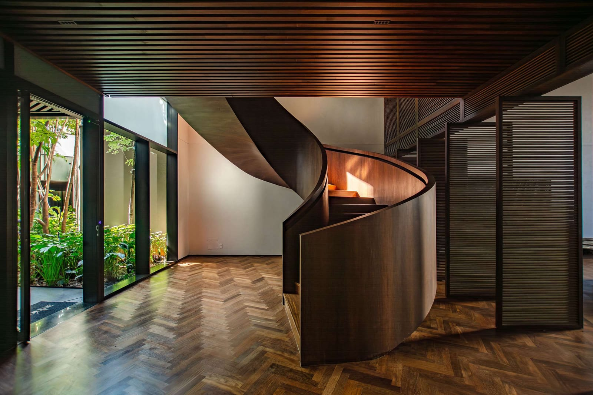
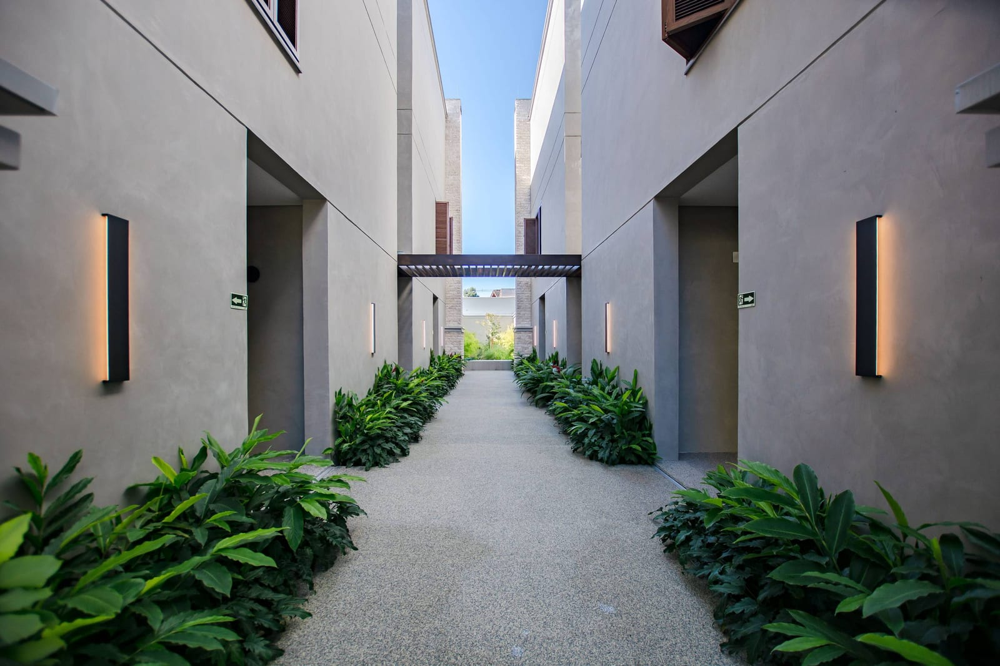
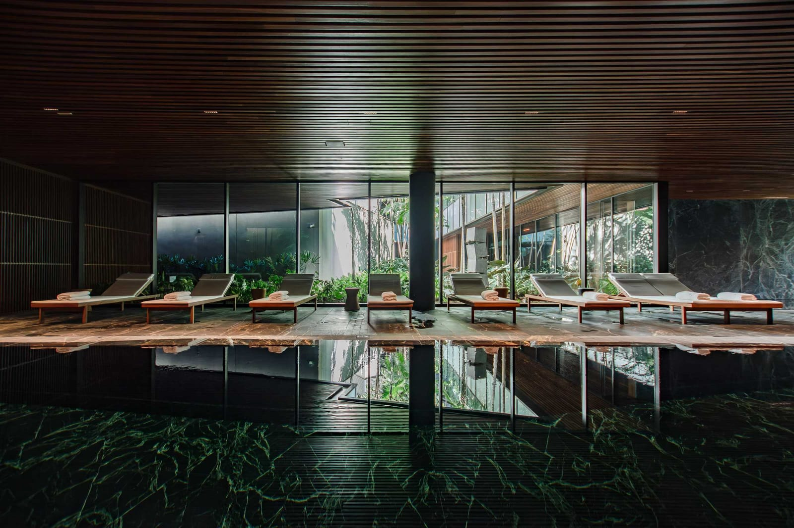
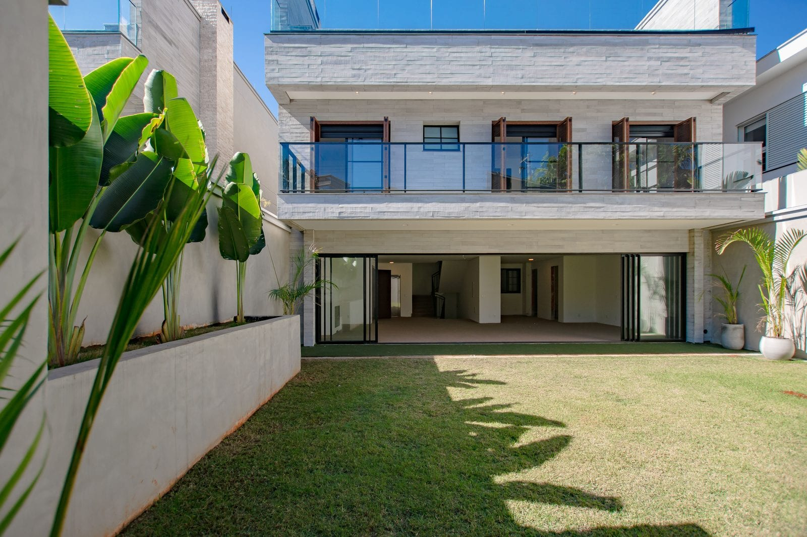
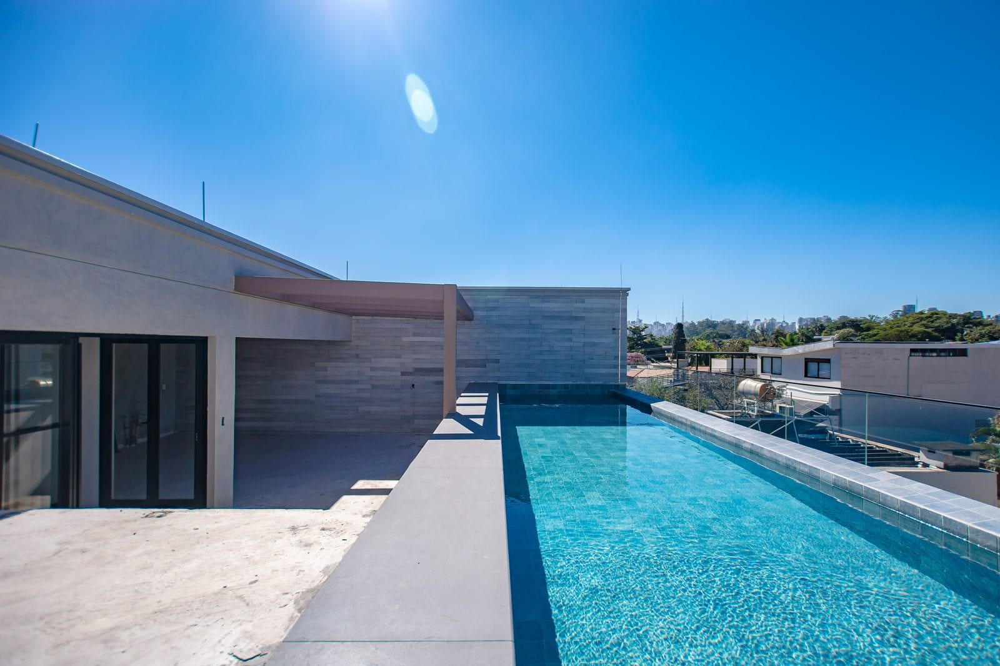
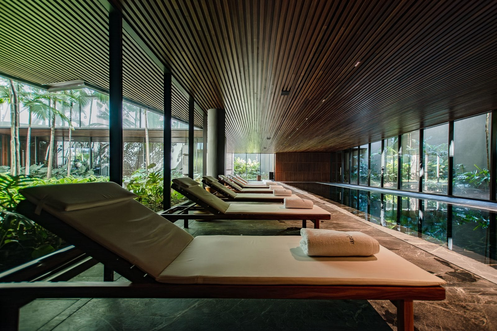

Creme, tinta e dourado, com tipografia serifada: o site fica em segundo plano e a fotografia é o elemento mais forte da tela. Aqui, com as fotos do projeto Kora.
Fotografia de imóveis e arquitetura





